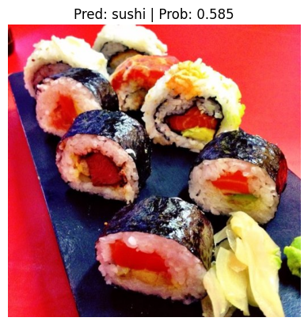
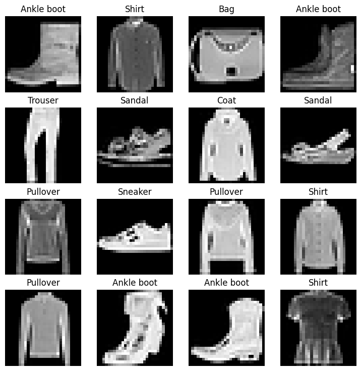

Projects
-
ViT paper implementation using PyTorch
-
I implemented the Vision Transformer (ViT) architecture from scratch,
visualizing the embedding creation process and training the model on
the Food-101 dataset for image classification. To further enhance
performance, I incorporated transfer learning by leveraging pretrained
weights from PyTorch models, which significantly improved the overall
accuracy.

-
Domain: Paper implementation, Computer Vision, Deep
Learning, PyTorch.
-
Code
-
Transfer learning using PyTorch
-
I utilized pretrained EfficientNet-B0 weights to classify specific
subcategories of the Food-101 dataset, testing the model’s
generalization on real-world data beyond the test set. To streamline
the workflow, I developed custom wrappers that simplified data
preparation, training, evaluation, and visualization, making the
experimentation process more efficient and reproducible.

-
Domain: Transfer learning, Computer Vision, Deep
Learning, PyTorch.
-
Code
-
Fashion MNIST solution in PyTorch
-
I worked on predictions using the FashionMNIST dataset, modularizing
the code to simplify training and testing across three different
models. The implementation was designed to be device-agnostic,
ensuring compatibility across CPUs and GPUs, and included detailed
time analysis for both training and testing phases.

- Domain: Deep Learning, PyTorch.
-
Code